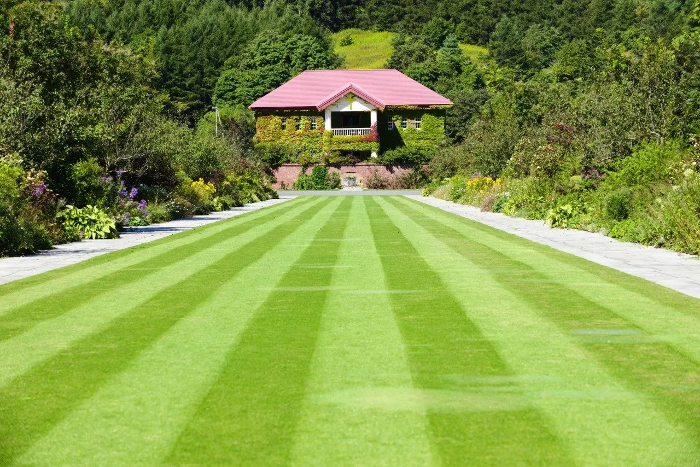
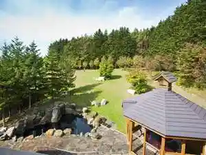
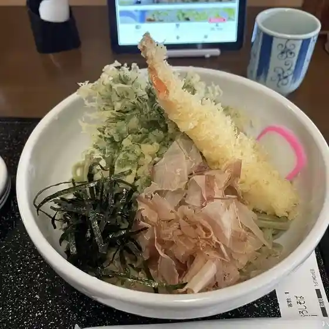
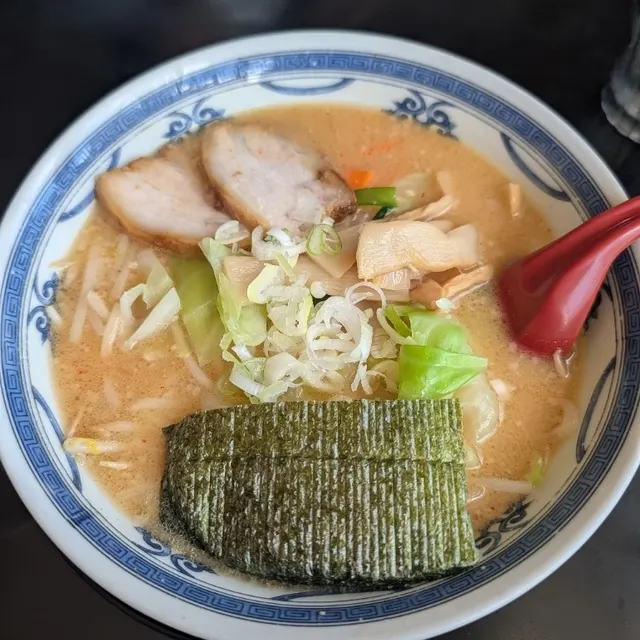
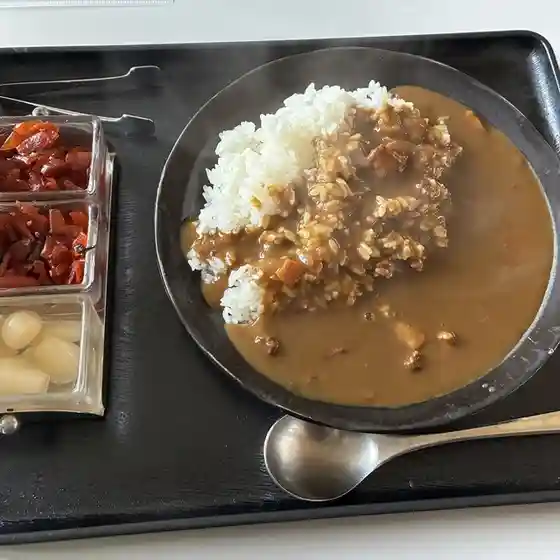
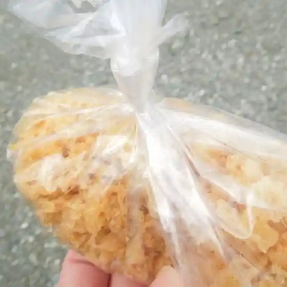
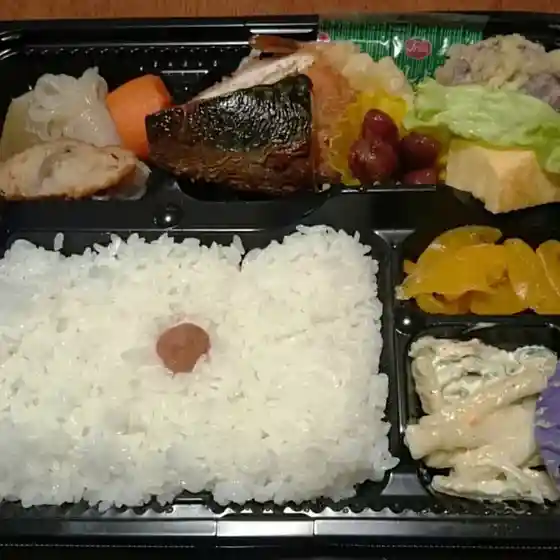
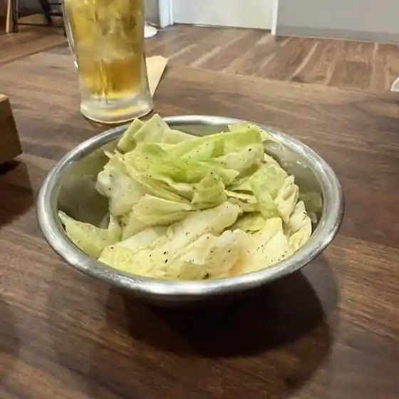
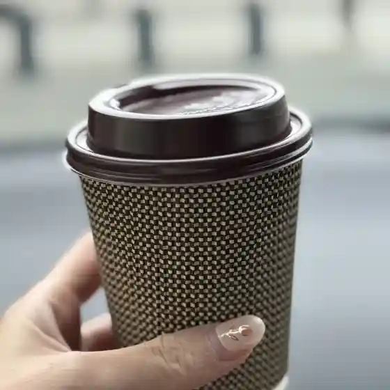
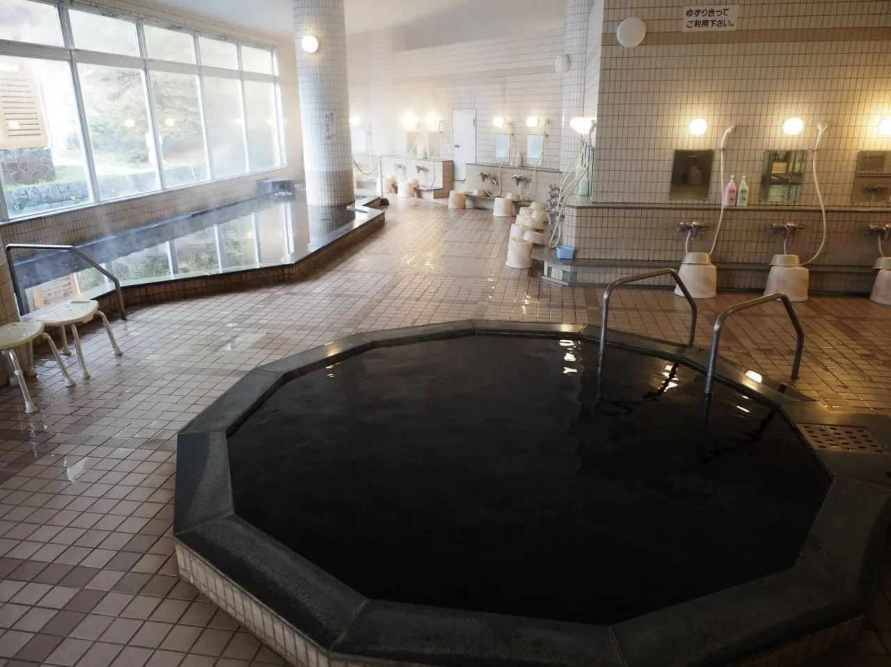

Yuni
Yuni · Hokkaido
Yuni
Highlighted on the Hokkaido map.

Stay
ユンニの湯

Yunni No Yu
Dining
そば処 井むら

Soba Tokoro I Mura
みそラーメン喜亭

Miso Raamen Ki Tei
どらいぶいん 立石

Doraibuin Tateishi
うどんの五衛門

Udonno Go Emon
札幌ゴルフ倶楽部 由仁コース
Sapporo Gorufu Kurabu Yuni Koosu
まんもす亭

Manmosu Tei
焼肉 弘

Yakiniku Hiroshi
由仁パーキングエリア（下り）

Yuni Paakingueria ( Kudari )
よしめん
Yoshimen
ホクレンショップ 由仁店
Hokurenshoppu Yuni Mise
セイコーマート 由仁店
Seikoomaato Yuni Mise
Cafe Tanto
Cafe Tanto
味とり
Aji Tori
カフェテリアバジル
Kafeteriabajiru
Be nut'ｓ
Be Nut' S
LAWSON 由仁町店
Lawson Yuni Machi Mise
Morinoyane
Morinoyane
ゆにガーデン
Yuni Gaaden
セイコーマート ともひろ店
Seikoomaato Tomohiro Mise
三好焼菓子店
Miyoshi Yaki Kashi Mise
おにぎり あぜっこ
Onigiri Azekko
かまど炊きごはん 米吉
Kamado Taki Gohan Yonekichi
ARCH
Arch
居酒屋 かおる
Izakaya Kaoru
Sights
Yuni Garden
Yuni Garden
Yuni Onsen

Yuni Onsen